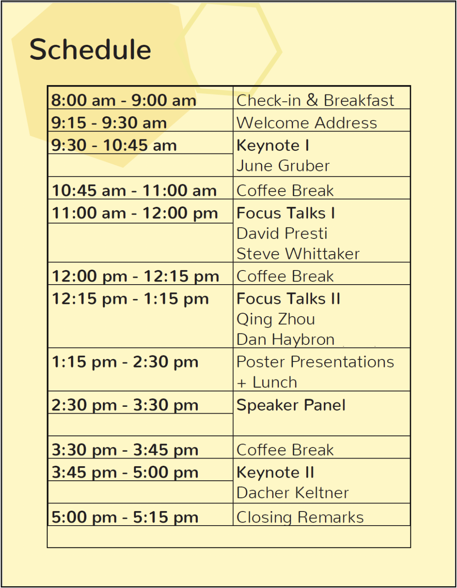

CCSC 2019
[back to conference page <<<]
The Cognitive Science Student Association is pleased to host the eleventh annual California Cognitive Science Conference (CCSC) held in April at UC Berkeley. The theme for CCSC 2019 is Constructing Happiness. We will be exploring this exciting topic through the lenses of psychology, neuroscience, linguistics, anthropology, computer science, philosophy and more.
Schedule
Speakers
Keynote Speakers
Dacher Keltner
Dacher Keltner is a professor of Psychology at UC Berkeley and faculty director of the Greater Good Science Center. Dacher’s research focuses the biological and evolutionary origins of emotion, in particular prosocial states such as compassion, awe, love, and beauty, and power, social class, and inequality. He is the co-author of two textbooks, Born to Be Good: The Science of a Meaningful Life, The Compassionate Instinct, and The Power Paradox: How We Gain and Lose Influence. Dacher has published over 200 scientific articles, written for many media outlets, and consulted for the Center for Constitutional Rights (to help end solitary confinement), Google, Facebook, the Sierra Club, and for Pixar’s Inside Out.
June Gruber
Dr. June Gruber is an Assistant Professor of Psychology and Neuroscience, and recent ICS Faculty Fellow, at the University of Colorado Boulder where she directs the Positive Emotion and Psychopathology Laboratory. June received her Ph.D. in Clinical Psychology and B.A. in Psychology from UC Berkeley, where she was an NIMH Predoctoral Fellow in Affective Science. After completing her Ph.D. in 2009, she was an Assistant Professor of Psychology at Yale University, and in 2014 relocated to the University of Colorado Boulder. She has authored nearly 100 articles and chapters that focus on emotion, happiness, and psychological-health in young and middle-aged adults with and without a history of mood difficulties and co-edited Positive Emotion: Integrating the Light Sides and Dark Sides and the forthcoming Oxford Handbook of Positive Emotion and Psychopathology. Her work has been recognized by a Rising Star Award from the Association for Psychological Science (APS), Janet Taylor Spence Award for Transformative Early Career Contributions from APS, NARSAD Young Investigator Award, and the Arthur Greer Memorial Prize for Outstanding Junior Faculty at Yale University. Dr. Gruber is the Interim Editor-in-Chief for Perspectives on Psychological Science. Her most recent passion is focused on ways to integrate science with teaching, including participating regularly in FTEP workshops on campus, co-writing a new mentoring column "Letters to Young Scientists" for Science Careers, publishing a recent correspondence in Nature on why written lab agreements are important in scientific mentoring, and received an IMPART award to run a workshop on campus next semester focused on providing research mentoring opportunities for underrepresented women students in affective science.
Focus Talk Speakers
Dan Haybron
Dan Haybron is the Theodore R. Vitali C.P. Professor of Philosophy at Saint Louis University. He received his PhD in philosophy at Rutgers University. His research focuses on ethics and the philosophy of psychology, with an emphasis on well-being, as well as related issues in political philosophy. He has published numerous articles in these areas. In 2015 he was awarded a $5.1 million grant for a three-year project, Happiness and Well-Being: Integrating Research Across the Disciplines, funded by the John Templeton Foundation and Saint Louis University. He is the author of The Pursuit of Unhappiness: The Elusive Psychology of Well-Being (Oxford University Press, 2008), and Happiness: A Very Short Introduction (Oxford University Press, 2013).
Qing Zhou
Dr. Zhou is an Associate Professor of Psychology and a core faculty in the Clinical Science Program at UC-Berkeley. Her research focuses on cultural, family, and temperament influences on children's executive function, socio-emotional, and academic development from preschool age to adolescence. She and her collaborators have conducted longitudinal studies of Chinese children in Asia, and Chinese American and Mexican American children in the U.S. She is a recipient of the Foundation for Child Development Young Scholars Award, and her work has been published in top journals in developmental, cultural, clinical, and educational psychology. Dr. Zhou directs the Culture and Family Study Lab at UC-Berkeley (https://zhoulab.berkeley.edu/). Her team is conducting a NIH-funded longitudinal study on bilingual, executive function, and socioemotional development of preschool-age dual language learners from low-income Mexican American and Chinese American families.
Steve Whittaker
Steve Whittaker is Professor of Human Computer Interaction at University of California at Santa Cruz. Probably best known for his work on computer mediated communication, he uses approaches that are motivated by the social sciences to design novel interactive systems that address important human problems. He is a member of the CHI Academy, and Editor of the journal Human Computer Interaction. He received a Lifetime Research Achievement Award from SIGCHI (Special interest group on Computer Human Interaction). He is also a Fellow of the Association for Computational Machinery. He has worked both in industry and academia, at IBM Labs, AT&T Bell Labs, and University of Sheffield, UK. His current interests are in personal informatics and computational well-being. His most recent book with Ofer Bergman is The Science of Managing Our Digital Stuff, from MIT Press.
David Presti
David Presti is a teaching professor of neurobiology, psychology, and cognitive science at the University of California, Berkeley, where he has been on the faculty in molecular and cell biology for nearly 30 years. For more than a decade he worked in the clinical treatment of addiction and of post-traumatic-stress disorder at the Department of Veterans Affairs Medical Center in San Francisco. And for the past 15 years, he has been teaching neuroscience and conversing about science with Tibetan Buddhist monastics in India, Bhutan, and Nepal. He has doctorates in molecular biology and biophysics from Caltech, and in clinical psychology from the University of Oregon, and is author of Foundational Concepts in Neuroscience: A Brain-Mind Odyssey (Norton, 2016) and of Mind Beyond Brain: Buddhism, Science, and the Paranormal (Columbia, 2018).
© 2021 Berkeley CSSA

We are a student group acting independently of the University of California. We take full responsibility for our organization and this web site.